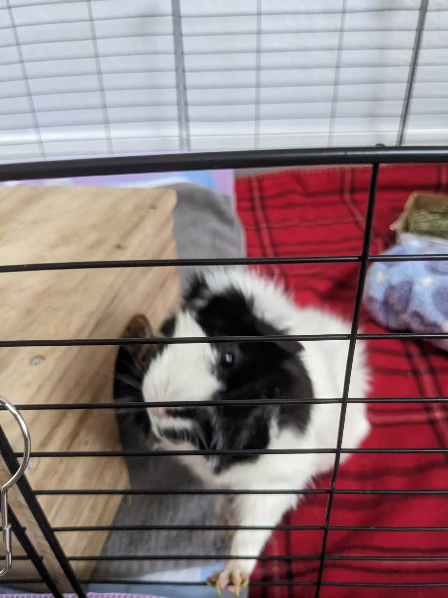

Oreo
Food
Oreo is not a big fan of zucchini and banana.
However, he is a big hay monster. He eats a lot of hay!
Hobbies
Oreo's hobbies are mainly eating (hay). Also, he likes hidding and exploring outside the cage. If he has an opportunity to visit the cleaning robot, you bet he will!
Pictures
